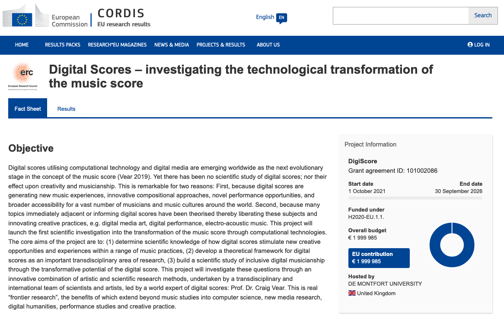

Craig Vear will give a keynote lecture at Tenor 22!
Drawing on findings from over a decade’s worth of practice-based experimentation in the field, Craig Vear builds a framework for understanding how digital scores create meaning. This book provides a solid foundation for any student/artist/teacher wishing to explore the relationship between music notation and technology.
